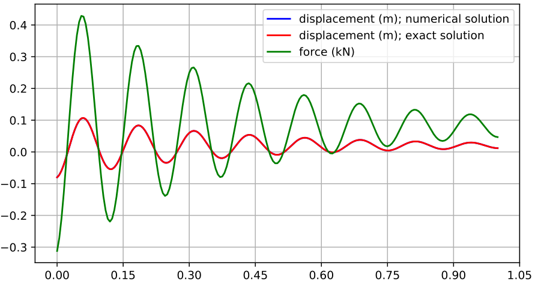

Mass-Spring-Damper tutorial
The python source code of the first tutorial can be found in the file:
main/pythonDev/Examples/springDamperTutorial.py
This tutorial will set up a mass point and a spring damper, dynamically compute the solution and evaluate the reference solution.
We import the exudyn library and the interface for all nodes, objects, markers, loads and sensors:
import exudyn as exu
from exudyn.itemInterface import *
import numpy as np #for postprocessing
Next, we need a SystemContainer, which contains all computable systems and add a new MainSystem mbs.
Per default, you always should name your system ‘mbs’ (multibody system), in order to copy/paste code parts from other examples, tutorials and other projects:
SC = exu.SystemContainer()
mbs = SC.AddSystem()
In order to check, which version you are using, you can printout the current Exudyn version. This version is in line with the issue tracker and marks the number of open/closed issues added to Exudyn :
print('EXUDYN version='+exu.__version__)
Using the powerful Python language, we can define some variables for our problem, which will also be used for the analytical solution:
L=0.5 #reference position of mass
mass = 1.6 #mass in kg
spring = 4000 #stiffness of spring-damper in N/m
damper = 8 #damping constant in N/(m/s)
f =80 #force on mass
For the simple spring-mass-damper system, we need initial displacements and velocities:
u0=-0.08 #initial displacement
v0=1 #initial velocity
x0=f/spring #static displacement
print('resonance frequency = '+str(np.sqrt(spring/mass)))
print('static displacement = '+str(x0))
We first need to add nodes, which provide the coordinates (and the degrees of freedom) to the system.
The following line adds a 3D node for 3D mass point (Note: Point is an abbreviation for NodePoint, defined in itemInterface.py.):
n1=mbs.AddNode(Point(referenceCoordinates = [L,0,0],
initialCoordinates = [u0,0,0],
initialVelocities = [v0,0,0]))
Here, Point (=NodePoint) is a Python class, which takes a number of arguments defined in the reference manual. The arguments here are referenceCoordinates, which are the coordinates for which the system is defined. The initial configuration is given by referenceCoordinates + initialCoordinates, while the initial state additionally gets initialVelocities.
The command mbs.AddNode(...) returns a NodeIndex n1, which basically contains an integer, which can only be used as node number. This node number will be used lateron to use the node in the object or in the marker.
While Point adds 3 unknown coordinates to the system, which need to be solved, we also can add ground nodes, which can be used similar to nodes, but they do not have unknown coordinates – and therefore also have no initial displacements or velocities. The advantage of ground nodes (and ground bodies) is that no constraints are needed to fix these nodes.
Such a ground node is added via:
nGround=mbs.AddNode(NodePointGround(referenceCoordinates = [0,0,0]))
In the next step, we add an object (sec:programStructure.), which provides equations for coordinates. The MassPoint needs at least a mass (kg) and a node number to which the mass point is attached. Additionally, graphical objects could be attached:
massPoint = mbs.AddObject(MassPoint(physicsMass = mass, nodeNumber = n1))
In order to apply constraints and loads, we need markers. These markers are used as local positions (and frames), where we can attach a constraint lateron. In this example, we work on the coordinate level, both for forces as well as for constraints. Markers are attached to the according ground and regular node number, additionally using a coordinate number (0 … first coordinate):
groundMarker=mbs.AddMarker(MarkerNodeCoordinate(nodeNumber= nGround,
coordinate = 0))
#marker for springDamper for first (x-)coordinate:
nodeMarker = mbs.AddMarker(MarkerNodeCoordinate(nodeNumber= n1,
coordinate = 0))
This means that loads can be applied to the first coordinate of node n1 via marker with number nodeMarker,
which is in fact of type MarkerIndex.
Now we add a spring-damper to the markers with numbers groundMarker and the nodeMarker, providing stiffness and damping parameters:
nC = mbs.AddObject(CoordinateSpringDamper(markerNumbers = [groundMarker, nodeMarker],
stiffness = spring,
damping = damper))
A load is added to marker nodeMarker, with a scalar load with value f:
nLoad = mbs.AddLoad(LoadCoordinate(markerNumber = nodeMarker,
load = f))
Finally, a sensor is added to the coordinate constraint object with number nC, requesting the outputVariableType Force:
mbs.AddSensor(SensorObject(objectNumber=nC, fileName='groundForce.txt',
outputVariableType=exu.OutputVariableType.Force))
Note that sensors can be attached, e.g., to nodes, bodies, objects (constraints) or loads. As our system is fully set, we can print the overall information and assemble the system to make it ready for simulation:
print(mbs)
mbs.Assemble()
We will use time integration and therefore define a number of steps (fixed step size; must be provided) and the total time span for the simulation:
tEnd = 1 #end time of simulation
h = 0.001 #step size; leads to 1000 steps
All settings for simulation, see according reference section, can be provided in a structure given from exu.SimulationSettings(). Note that this structure will contain all default values, and only non-default values need to be provided:
simulationSettings = exu.SimulationSettings()
simulationSettings.solutionSettings.solutionWritePeriod = 5e-3 #output interval general
simulationSettings.solutionSettings.sensorsWritePeriod = 5e-3 #output interval of sensors
simulationSettings.timeIntegration.numberOfSteps = int(tEnd/h) #must be integer
simulationSettings.timeIntegration.endTime = tEnd
We are using a generalized alpha solver, where numerical damping is needed for index 3 constraints. As we have only spring-dampers, we can set the spectral radius to 1, meaning no numerical damping:
simulationSettings.timeIntegration.generalizedAlpha.spectralRadius = 1
In order to visualize the results online, a renderer can be started. As our computation will be very fast, it is a good idea to wait for the user to press SPACE, before starting the simulation (uncomment second line):
exu.StartRenderer() #start graphics visualization
#mbs.WaitForUserToContinue() #wait for pressing SPACE bar to continue (in render window!)
As the simulation is still very fast, we will not see the motion of our node. Using e.g. steps=10000000 in the lines above allows you online visualize the resulting oscillations.
Finally, we start the solver, by telling which system to be solved, solver type and the simulation settings:
exu.SolveDynamic(mbs, simulationSettings)
After simulation, our renderer needs to be stopped (otherwise it would stay in background and prohibit further simulations).
Sometimes you would like to wait until closing the render window, using WaitForRenderEngineStopFlag():
#SC.WaitForRenderEngineStopFlag()#wait for pressing 'Q' to quit
exu.StopRenderer() #safely close rendering window!
There are several ways to evaluate results, see the reference pages. In the following we take the final value of node n1 and read its 3D position vector:
#evaluate final (=current) output values
u = mbs.GetNodeOutput(n1, exu.OutputVariableType.Position)
print('displacement=',u)
The following code generates a reference (exact) solution for our example:
import matplotlib.pyplot as plt
import matplotlib.ticker as ticker
omega0 = np.sqrt(spring/mass) #eigen frequency of undamped system
dRel = damper/(2*np.sqrt(spring*mass)) #dimensionless damping
omega = omega0*np.sqrt(1-dRel**2) #eigen freq of damped system
C1 = u0-x0 #static solution needs to be considered!
C2 = (v0+omega0*dRel*C1) / omega #C1, C2 are coeffs for solution
steps = int(tEnd/h) #use same steps for reference solution
refSol = np.zeros((steps+1,2))
for i in range(0,steps+1):
t = tEnd*i/steps
refSol[i,0] = t
refSol[i,1] = np.exp(-omega0*dRel*t)*(C1*np.cos(omega*t)+C2*np.sin(omega*t))+x0
plt.plot(refSol[:,0], refSol[:,1], 'r-', label='displacement (m); exact solution')
Now we can load our results from the default solution file coordinatesSolution.txt, which is in the same
directory as your python tutorial file.
Note that the visualization of results can be simplified considerably using the PlotSensor(...) utility function as shown in the Rigid body and joints tutorial!
For reading the file containing commented lines (this does not work in binary mode!), we use a numpy feature and finally plot the displacement of coordinate 0 or our mass point (data[:,0] contains the simulation time, data[:,1] contains displacement of (global) coordinate 0, data[:,2] contains displacement of (global) coordinate 1, …)):
data = np.loadtxt('coordinatesSolution.txt', comments='#', delimiter=',')
plt.plot(data[:,0], data[:,1], 'b-', label='displacement (m); numerical solution')
The sensor result can be loaded in the same way. The sensor output format contains time in the first column and sensor values in the remaining columns. The number of columns depends on the sensor and the output quantity (scalar, vector, …):
data = np.loadtxt('groundForce.txt', comments='#', delimiter=',')
plt.plot(data[:,0], data[:,1]*1e-3, 'g-', label='force (kN)')
In order to get a nice plot within Spyder, the following options can be used (note, in some environments you need finally the command plt.show()):
ax=plt.gca() # get current axes
ax.grid(True, 'major', 'both')
ax.xaxis.set_major_locator(ticker.MaxNLocator(10))
ax.yaxis.set_major_locator(ticker.MaxNLocator(10))
plt.legend() #show labels as legend
plt.tight_layout()
plt.show()
The matplotlib output should look like this:
{kind=link}